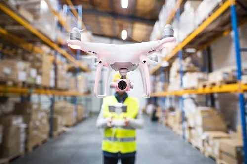

Aerial filming in Paraguay for productions that need stronger visual coverage.
Drone Filming
Maite Media provides drone filming in Paraguay for agencies, production companies, brands, and institutions that need aerial visuals as part of a larger production or a focused standalone shoot.
Aerial footage should support the brief, not distract from it
Drone filming works best when it gives the viewer context, scale, movement, or a stronger visual understanding of a place, operation, event, or environment.
Common use cases
- Corporate and industrial locations
- Event venues and large gatherings
- Institutional or infrastructure visuals
- Branded productions
- Documentary or field-based context shots
A specialist service with practical application
Some clients need drone capture as a small but important part of a broader production. Others need a dedicated aerial shoot. In either case, the value is the same: aerial visuals that feel purposeful, not generic.

Often part of a bigger production plan
Drone filming can be integrated into corporate video, event coverage, institutional content, or production support work.
Integrated rather than isolated
When the project requires it, we align the aerial component with the broader brief so it strengthens the final output rather than feeling separate from it.
Related routes
This service commonly supports Production Support, Corporate Video Production, and Paraguay.
Frequently asked questions
Do you provide drone filming as a standalone service?
Yes. Drone filming can be scoped as a dedicated aerial capture service or integrated into a larger production.
Can drone footage be integrated into a larger production?
Yes. It is often used inside corporate, event, institutional, or production support work.
Do you work with agencies and production companies?
Yes. Agencies and production companies are core buyers for this service.
Need drone filming in Paraguay?
Tell us what the aerial footage needs to support, where it will take place, and how it fits into the broader project.